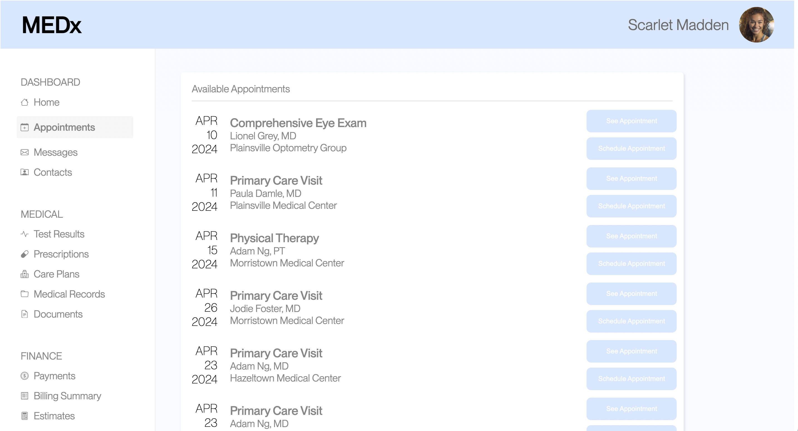
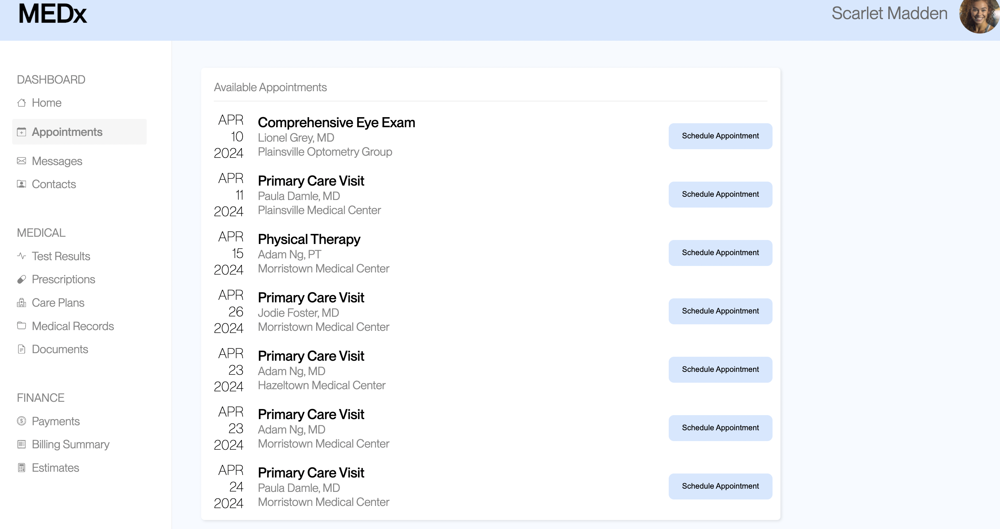

<!DOCTYPE html>
<html lang="en"></html>
<html>
  <head>
    <title>A/B Testing</title>
    <link rel="stylesheet" href="styles.css" />
  </head>
  <body>
    <h1>A/B Testing</h1>
    <h2>Overview</h2>
    <p>
      I will be running a simple A/B test on two different UI designs and
      analyzing the results. Users will be asked to perform the same task on
      both UI designs with the second design being a redesign aimed at
      increasing usability. All users will be asked to Schedule an appointment
      with Adam Ng, MD at Morristown Medical Center on April 23, 2024
      <br />
      This project will consist of collecting user data on the different UI
      designs, hypothesize, and analyze data. From these results, I will draw
      conclusions on whether a design choice could have reasonably impacted user
      interaction.
    </p>
    <h2>Part 1: Data Collection</h2>
    <p>
      This collection of data consisted of gathering a group of users who were told
      to perform a given task using design A.
      Then, I updated the UI design A by adding bolded
      titles, reducing the number of UI elements on screen to give a less
      cluttered look, and improving color contrast. Users were then told to 
      perform the same task using design B. 
    </p>
    <figure>
      
      <figcaption>Design A: Original</figcaption>
    </figure>
    <figure>
      
      <figcaption>Design B : Redesign</figcaption>
    </figure>
    
    <h2>Part 2: Analysis</h2>
    <h3>Creating Hypothesis</h3>
    <h4>Null Hypotheses</h4>
    <p id="hypothesis">
      The updated UI design will have the same misclick rate as the
      original UI design.
    </p>
    <p id="reasoning">
      * Due to changes that I made that aimed to simplify the interface such as
      reducing the number of repetitive UI elements including the number of
      buttons on the interface , I predict that I will be able to reject the
      null hypothesis.
    </p>
    <p id="hypothesis">
      The updated UI design will have the same average time spent on page as the
      original UI design
    </p>
    <p id="reasoning">
      * I predict that I will be able to reject the null hypothesis since
      reducing the number of reputitive and unnecessary UI elements should allow
      for easier navigations and thus, less time spent on the page to complete a
      task.
    </p>
    <p id="hypothesis">
      The updated UI design will have the same number of clicks as the original
      UI design
    </p>
    <p id="reasoning">
      * I predict that I will reject the null hypothesis because I removed the
      "See Appointments" button and therefore, expect less confusion from the
      user and misclicks. In theory, there should be less action needed to
      complete a task.
    </p>
    <p>
      Note: I have chosen number of clicks as a metric for the success of my
      redesign as this gives information of how much effort or actions had to be
      taken by the user to complete a task which gives an insight on its
      usability. In addition to the misclick rate, this information gives us
      quantitative data of much more effort had to be taken.
    </p>
    <h4>Alternate Hypotheses</h4>
    <p id="hypothesis">
      The updated UI design's  misclick rate will be lower than that of
      the original UI design.
    </p>
    <p id="reasoning">
      * This alternate hypothesis is based on the idea that the redesign
      increases usability by reducing duplicate UI elements and improving 
      color contrast. This should, as a result,
      reduce the possibility of a misclick due to confusion from the user.
    </p>
    <p id="hypothesis">
      The updated UI design's average time spent on page will be less than
      that of the original UI design.
    </p>
    <p id="reasoning">
      * This alternate hypothesis is derived from the fact that the redesign
      declutters the UI and improves readbaility which should change the way the user interacts with the
      site and thus, change and decrease how much time they spend on a given task.
      <!-- allow for the user to find the intended
      tools quicker and therefore, spend less time on the page to complete their
      task. -->
    </p>
    <p id="hypothesis">
      The updated UI design will have the fewer number of clicks , on average,
      than the original UI design.
    </p>
    <p id="reasoning">
      * Since the redesign simplifies the UI and creates a bigger emphasis on
      the different types doctors by bolding the names, in theory, the number of
      clicks on the redesign should be less since the number of misclicks will
      be reduced.
    </p>
    <h3>About the Data</h3>
    <p>
      Now, using the data gathered from users interactions with both design A
      and B, I will perform statistical tests to determine if there is a
      significant difference between the misclick rate, time on page, and number
      of clicks that allow me to reject the null hypotheses. Let the
      significance level be 0.05.
    </p>
    <h5>Misclick Rate Test</h5>
    <p>
      For the misclick rate, represented by a boolean indictaing whether the
      user pushed a button external to the task, I will use a chi-squared test.
      This is due to the fact that we are analyzing categorical data
      (TRUE/FALSE) and the frequency on both UI designs.
      <br />
      <br />
      After performing the chi-squared test for the misclick rate, the data
      collected includes:
    </p>

    <!-- I got a
      chi-squared value of approximately 0.316, a p-value of 0.57, and 1 degree
      of freedom. -->
    <li>1 degrees of freedom</li>
    <li>Chi-Squared value of approximately 0.316</li>
    <li>P-value of approximately 0.57.</li>
    <!-- <li>Average time on page (version A): 12,860 milliseconds</li>
    <li>Average time on page (version B): 7535 milliseconds</li> -->

    <p id="label">Analysis</p>
    <p>
      The 1 degree of freedom indicates the amount of independent pieces of data
      available for estimating parameters in the chi-square distribution.
      Therefore, larger amounts of degrees of freedom allow for better precision
      in our estimates. In this case, the 1 degree of freedomon indicates a 2x2
      table in which two groups ( design A and B) are compared.
      <br />
      <br />

      Further, since a chi-squared value measures the discrepancy between the
      observed and expected values between designs, the approximate chi-squared
      value of 0.316 tells us there is very small discrepancy between the
      observed and expected misclick rates between UI design A and UI design B.
      <br />
      <br />

      We see that the average miclick rate for version A is 0.2 while the
      misclick rate for version B is approximately 0.133. This tells us that, on
      average, people misclicked less on version B, but only slightly.
      <br />
      <br />
      Since we see that our p-value is greater than our significance level (0.57
      > 0.05), we fail to reject the null hypothesis. Therefore, we failed to
      find a statistical significant difference in the misclick rate between the
      two designs.
      <br />
      <br />
    </p>
    <p id="label">Conclusion</p>
      In other words, it is likely that UI design B is no better
      than UI design A in terms of how often a user will miclick. We found that
      the difference between the average misclick rate for version A (0.2) and
      the average misclick rate for version B (1.33) is not a true difference.
    </p>
    <h5>Time on Page Test</h5>
    <p>
      Unlike the misclick rate data, the time on page data is continous and
      therefore, I will use a t-test.
      <!-- Further, since I want to test whether
      there is a difference, in general, between the two design's time on page,
      I will use a two-tailed t-test. -->
      Further, since I am not only interested in testing whether there is a
      difference between design A and B, but rather also in the idea that users
      spent less time on design B than design A, I will use a one-tailed t-test.
      <!-- After performing the two-tailed t-test, the data collected include -->
      After performing the one-tailed t-test, the data collected include
    </p>
    <!-- <li>Approximately 36 degrees of freedom,</li>
    <li>T-score of approximately -2.56</li>
    <li>P-value of approximately 0.0148.</li>
    <li>Average time on page (version A): 12,860 milliseconds</li>
    <li>Average time on page (version B): 7535 milliseconds</li> -->
    <li>Approximately 36 degrees of freedom,</li>
    <li>T-score of approximately -2.56</li>
    <li>P-value of approximately 0.00741.</li>
    <li>Average time on page (version A): 12,860 milliseconds</li>
    <li>Average time on page (version B): 7535 milliseconds</li>
    <p id="label">Analysis</p>
    <p>
      The 36 degrees of freedom collected from this test indicates the available
      variability in my data to estimate population parameters. Therefore, the
      36 degrees of freedom tells us there are 36 independent pieces of
      information that can estimate the variability in the data from both
      groups. Since the degrees of freedom impact our critical value and
      therefore, how we interpret data, this statistic is important. 36 df shows
      that we have a large enough sample size to allow for the t-distribution to
      resemble the normal distrubution and thus, have our estimate be more
      precise.
    </p>
    <p>
      The t-score of approximately -2.56 indicates the number of standard
      deviations that design B's mean time on page differs from the mean time on
      page for design A. In this case, the absolute value of the t-score is
      relatively large which indicates that there is a substantial difference
      between the time spent on page A and the time spent on page B. Due to how
      this test was set up, the negative t-score indicates that design B's time
      spent on page is less than that of design A's.

      <br />
      <br />
      We find that the average time spent on page for A is 12,860 milliseconds
      while the average time spent on page in version B is 7535 milliseconds.
      This shows that, on average, users spent less time on the page for design
      A than B.
      <br />
      <br />

      Further, we see that the p-value is 0.007 which when compared to our
      significan level of 0.05, we find that it is less. Therefore, since 0.007
      is less than 0.05, we are able to reject the null hypothesis. We found a
      statisical significant difference between deisgn A and B's time on page.
    </p>

    <p id="label">Conclusion</p>
    <p>
      In other words, it is likely that version B is better than version A in
      terms of time spent on page to complete a signle task. This is due to the
      fact that we find that people spend less time on the page to complete a
      given task for version B and through analysis, we know this is a true
      difference.
    </p>

    <h5>Number of misclicks Test</h5>
    <p>
      Similar to the time spent on page, the number of misclick metric is
      continous and therefore, a t-test is the appropriate test. In particular,
      we want to test whether design B's number of misclicks is less than that
      of design A's and therefore, we will use a one-tailed t-test to test our
      null hypothesis.
      <br />
      <br />
      After performing the one-tailed t-test, the data collected include:
    </p>
    <li>Approximately 40 degrees of freedom,</li>
    <li>T-score of approximately -1.52</li>
    <li>P-value of approximately 0.0676.</li>
    <li>Average number of clicks (version A): 3.088 clicks</li>
    <li>Average number of clicks (version B): 2.267 clicks</li>
    <p id="label">Analysis</p>
    <p>
      The 40 degrees of freedom collected from this test indicates the available
      variability in my data to estimate population parameters. In other words,
      there are 40 independent pieces of information that can estimate the
      variability in the data from both groups. As mentioned before, the degrees
      of freedom impacts our critical value and therefore, the larger the
      degrees of freedom, the more precise our estimate can be. Since 40 is
      relatively large, the t-distribution should resemble the normal
      distribution, allowing our estimate to be more precise.
    </p>
    <p>
      The t-score of approximately -1.525 indicates the number of standard
      deviations that design B's mean number of clicks differs from the mean
      number of clicks for design A. We know that the larger the t-scores
      indicate a largedifference between the two groups while a small t score
      indicates similarity between the two groups. In this case, the absolute
      value of the t-score is not moderately large and therefore, it does not
      necessarily indicate a large difference. Still, the negative t-score
      indicates that design B's average number of clicks is less than that of
      design A's. However, the t-score and the degrees of freedom allowed us to
      find the p-value and have a more definitive understanding of whether the
      difference is significant.

      <br />
      <br />
      We find that the average number of clicks for deisgn A is 3.088 clicks
      while the average time spent on page in version B is 2.267 clicks. This
      shows that, on average, users had to click a little less in design B than
      in deisgn A.
      <br />
      <br />

      Further, we see that the p-value is 0.067 which when compared to our
      significan level of 0.05, we find that it is more. Therefore, since 0.067
      > 0.05, we fail to reject the null hypothesis. We did not find a
      statisical significant difference between the number of clicks for deisgn
      A and B.
    </p>
    <p id="label">Conclusion
    </p>
    <p>
      In other words, it is likely that version A is no different than version B
      in regards to the number of clicks that a user makes. This is due to the
      fact that we found that the difference between the average number of
      clicks made on design A (3.088 clicks) and B (2.267 clicks) is not a true
      difference.
    </p>
    <h3>Summary Statistics</h3>
    <p>In addition to the statistical data calculated above, I found other data that may 
      prove to be useful in better understanding the general shape and patterns of 
      the data for both designs. 
      In particular, the average values of the data, as mentioned
      previously, is of great importance as it summarizes the data to one data value. For example, 
      design A's average misclick rate being 0.25 and design B average misclick rate being 0.133 
      gives us a better understanding of the slight difference between the two data sets. This tells
      us that people misclicked for design B only slightly less than in design A. Similarly, the 
      average number of clicks in design A and B are not very different as the average number of clicks
      for design A was 3.088 clicks while 2.267 clicks for B. These values give us an idea of how many 
      actions people have to make to complete a task and thus, how user-friendly the design is.
      Further, the average 
      time on page for design A was 12,860 milliseconds while
      the average time on page for deisgn B was 7535 milliseconds which tells us that more people spent more
      time on the page in design A than in design B. Thus, we are given an insight in how the way people
      interact with the UI changes. It seems that in design B, people were able to spend less time completing
      the task, allowing us to think about how the usability improved.
      The mode is another statistical data point that gives us a better idea of the patterns in our data. 
      For example, the mode for design A and B in regards to misclick rate was FALSE, indicating that 
      most people did not misclick regardless of the design. Therefore, design A can also be thought of as 
      user-friendly. Further, the mode for the number of clicks was 2 for 
      both design A and B which tells us that most people will only require 2 clicks to complete the task. 
      In other words, since 2 clicks is a very small amount of clicks, we can see that in either design, most
      people do not need to use an excessive amount of effort to complete the given task. 
      Similarly, the median value in the data set in
      regards to number of clicks is 2 for both designs. This data
      allows us to compare it to the average number of clicks to get an idea of the skewness 
      of the data. We find that the average number of clicks for both designs are greater than the median, 
      meaning that the data is skewed to the right for both data sets, with design B being slightly less skewed.

    </p>
    <h2>Final Thoughts</h2>
    <p>Through this process, I aimed at redesigning an interface that would allow for improved usability by
      eliminating redundant UI elements. I hypothesized that the changes I implemented would improve misclick
      rate, time on page, and number of clicks. However, after running tests, I failed  to find a significant
      difference between both designs in terms of the misclick rate and number of clicks. Therefore, 
      while I believe that eliminating
      duplicate and unnecessary UI elements does improve readability and navigation, the way users
      interacted with design B did not greatly differ from the way they interact with design A.  

    </p>
    <!-- <p>Some additional statistical information found include:</p> -->
    <!-- <p id="label">Misclick Rate</p>
    <li>On average, 0.25 misclicks were made for design A, while
      0.133 misclicks were made for design B. 
    </li>
    <li>The mode or most frequent value for design A and design B was
      false, indicating that more people did not misclick than people who did 
    </li>
    <li>
      The median, calculated by simply grabbing the value from the midpoint of
      how the data was collected, was TRUE for design A while FALSE for design B.
    </li>

    <p id="label">Time on Page</p>
    <li>
      On average, users spent 12,860 milliseconds on page for design A while
      the average time on page for deisgn B was 7535 milliseconds
    </li>
    <li>The median value in the data set for design A is 8526.5 milliseconds while the 
      median value in design B's data set is 7475 milliseconds.
    </li>
    <li>
      Neither of the data sets have a mode as no value appears more than once.
    </li>
    <li>
      The range in time spent on page for design A is between 56,671 milliseconds and 3,426
      milliseconds (53,245 milliseconds), while the range for design B is between 11,376 and 4,844 milliseconds (6,532 milliseconds).
    </li>
    <p id="label">Number of Clicks</p>
    <li>
      On average, users clicked 3.088 times in design A and 2.267 times in design B. 
    </li>
    <li>The median value in the data set for both design A and B is 2.
    </li>
    <li>
      The mode or the most frequently seen value in the data is 2 for both designs.
    </li>
    <li> The range of the data points in design A was between 16 and 2 (14), while the range for 
      data set B was between 4 and 2 (2).
    </li> -->
  </body>
</html>
